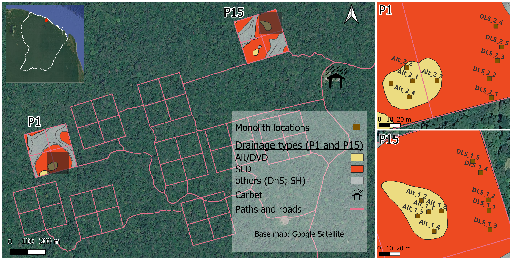

Effects of soil drainage types on macrofaunal community composition and density
Abstract
Enter here our amazing abstract!/ About 10 lines (see consignes)
Keywords
soil macrofauna, soil drainage, Paracou, Amazon forest, soil ecology
1 Introduction
TEXT
1.1 Context 1
TEXT
1.2 Context 2
TEXT
2 Material and Methods
2.1 Study Site
Refer to Figure 1
2.2 Sampling and Identification
text
2.3 Statistical analysis
Analysis was performed using R version 4.6.1 (R Core Team, 2026).
Explorative Analysis
TEXT
Analysis of Abundances (Generalized Linear Mixed Models)
glmmTMB (M. Brooks et al., 2026; M. E. Brooks et al., 2017) for fitting GLMMs negative binomial (NB2) and Poisson tested
Model diagnostics evaluated using DHARMa (Hartig, 2026)
Type II Wald \(\chi^2\) tests Anova() from car (Fox et al., 2026; Fox & Weisberg, 2019)
Analysis of Community Composition (PERMANOVA)
vegan (Oksanen et al., 2026): adonis2, betadisper, permutest, envfit permute (Simpson, 2026): permutation schemes
tidyverse (Wickham et al., 2019; Wickham, 2023) used for plotting and data processing
Spatial representation of sampling sites: in QGIS (QGIS Development Team, 2024). Monolith locations reconstructed using field measurements and reference trees from Paracou inventory data (Derroire et al., 2026a, 2026b) in R (R Core Team, 2026) and sf package (Pebesma, 2018; Pebesma & Bivand, 2023)
Estimated marginal means and Tukey pairwise comparisons using emmeans (Lenth & Piaskowski, 2026).
3 Results
3.1 General
TEXT Densities by soil type and layer Figure 2

TEXT Relative composition of community abundances Figure 3

TEXT Explorative ordination PCA Figure 4

3.2 GLMM
Effects of soil type and layer were tested on global, ant, termite and earthworm abundances. All retained models described below are listed in Table 2.
Global Abundance
Type II Wald \(\chi^2\) tests revealed a highly significant effect of soil layer on total soil macrofauna abundance (\(\chi^2\) = 106.85, df = 2, p < 0.001). The effect of soil type was not significant (\(\chi^2\) = 0.52, df = 1, p = 0.469). Estimated random-effect variance (monolith) was 0.437 (SD = 0.661), indicating variation in baseline macrofauna abundance among monoliths.
Pairwise comparisons with Tukey adjustment (Table 1) showed that macrofauna abundance was significantly higher in layer 10 than in layers L (7.42 times) and 20 (6.18 times), while no significant difference was found between layers L and 20 (p = 0.714).
Formicidae
Type II Wald \(\chi^2\) tests revealed a significant effect of soil layer on ant abundance (\(\chi^2\) = 28.00, df = 2, p < 0.001). The effect of soil type was not significant (\(\chi^2\) = 0.48, df = 1, p = 0.486). The estimated random-effect variance for monolith was 0.655 (SD = 0.810), indicating variation in baseline ant abundance among monoliths. Quantile deviation was detected in the DHARMa residuals for the presented model. Specifically, upper quantile deviated significantly and thus relatively high-abundance observations may not be adequately captured by the model. Since the diagnostics did not indicate deviations regarding dispersion, zero-inflation, uniformity as well outliers, and the model has the best AIC support, it was retained, regardless.
Pairwise comparisons with Tukey adjustment (Table 1) showed that ant abundance was significantly higher in layer 10 than in layer L (5.05 times) and layer 20 (3.27 times), while no significant difference wasfound between layers L and 20 (p = 0.3995).
Isoptera
Type II Wald \(\chi^2\) tests revealed a highly significant effect of soil layer on termite abundance (\(\chi^2\) = 36.56, df = 2, p < 0.001).The effect of soil type was not significant (\(\chi^2\) = 0.89, df = 1, p = 0.347). The estimated random-effect variance for monolith was effectively zero (\(8.22 \times 10^{-9}\); SD = 0.00009), indicating virtually no remaining variation in baseline termite abundance among monoliths after accounting for the fixed effects.
Pairwise comparisons with Tukey adjustment (Table 1) showed that termite abundance was significantly higher in layer 10 than in layer L (18.08 times) and layer 20 (745.48 times; estimated richness for 20 nearing zero). Abundance was also significantly higher in layer L than in layer 20 (41.23 times; all p ).
| Taxon | Comparison | Abundance ratio | z-ratio | Adjusted p-value |
|---|---|---|---|---|
| Total macrofauna | L - 10 | 0.13 | -9.12 | <0.0001*** |
| Total macrofauna | L - 20 | 0.83 | -0.78 | 0.713689 |
| Total macrofauna | 10 - 20 | 6.18 | 8.34 | <0.0001*** |
| Ants (Formicidae) | L - 10 | 0.20 | -4.96 | <0.0001*** |
| Ants (Formicidae) | L - 20 | 0.65 | -1.29 | 0.399482 |
| Ants (Formicidae) | 10 - 20 | 3.27 | 3.84 | 0.000363*** |
| Termites (Isoptera) | L - 10 | 0.06 | -4.06 | 0.000145*** |
| Termites (Isoptera) | L - 20 | 41.23 | 3.01 | 0.007262** |
| Termites (Isoptera) | 10 - 20 | 745.48 | 5.42 | <0.0001*** |
| Abundance ratios are exponentiated log-scale contrasts. Significance levels: * p < 0.05; ** p < 0.01; *** p < 0.001. P-values adjusted using the Tukey method within each taxon. | ||||
Lumbricina Oligochaetes
Type II Wald \(\chi^2\) tests indicated a significant effect of soil layer on earthworm abundance (\(\chi^2\) = 12.69), df = 2, p = 0.0018),whereas soil type had no significant effect (\(\chi^2\) = 0.35), df = 1, p = 0.557). Pairwise comparisons showed significantly higher earthworm abundance in layer 10 compared to layer 20 (2.31 times higher). No significant differences were detected between layer L and the other layers. However, no earthworms were recorded in layer L, resulting in unstable model estimates and unbounded confidence intervals for this layer. The Estimated random-effect variance for monoliths was 0.510 (SD = 0.714)
| Response | Distribution | Predictor | chi_square | df | p-value |
|---|---|---|---|---|---|
| Total macrofauna | Negative binomial | soil_type | 0.52 | 1 | 0.46933 |
| Total macrofauna | Negative binomial | layer | 106.85 | 2 | <0.0001*** |
| Ants | Negative binomial | soil_type | 0.48 | 1 | 0.48633 |
| Ants | Negative binomial | layer | 28.00 | 2 | <0.0001*** |
| Termites | Negative binomial | soil_type | 0.89 | 1 | 0.34664 |
| Termites | Negative binomial | layer | 36.56 | 2 | <0.0001*** |
| Earthworms | Poisson | soil_type | 0.35 | 1 | 0.55692 |
| Earthworms | Poisson | layer | 12.69 | 2 | 0.00176** |
| Type II Wald Chi-square tests. All models included soil type and soil layer as fixed effects and monolith ID as a random intercept. Significance levels: * p < 0.05; ** p < 0.01; *** p < 0.001 | |||||
3.3 PERMANOVA
PERMANOVA did not show a significant difference in macrofaunal community composition between soil types (F = 1.68, R² = 0.085, p = 0.139). The test for homogeneity of multivariate dispersion was also non-significant (F = 0.11, p = 0.742), indicating no detectable difference in within-group dispersion between soil types. Layers were aggregated per monolith to account for spatial dependence.
PERMANOVA revealed a significant effect of soil layer on macrofauna community composition (Bray–Curtis dissimilarity: F = 5.46, R² = 0.163,p = 0.0001). Soil layer explained around 16.3% of variation in the community composition, indicating that macrofauna community composition differed significantly among layers. Permutation was restricted within monolith to account for spatial dependence of layers. Homogeneity of multivariate dispersion was assessed using a permutation test based on betadisper. No significant differences in dispersion were detected for soil layers (F = 0.75, p = 0.321).
Pairwise PERMANOVA suggests significant differences in macrofauna community composition for all soil layers (Table 3). Significant differences were observed between L and 10 (F = 6.05, R² = 0.141, adjusted p = 0.0003), L and 20 (F = 4.55, R² = 0.110, adjusted p = 0.0003), and 10 and 20 (F = 5.76, R² = 0.132, adjusted p = 0.0012), using Bonferroni correction.
| Comparison | F-statistic | R² | Adjusted p-value |
|---|---|---|---|
| L - 10 | 6.05 | 0.141 | 0.0003*** |
| L - 20 | 4.55 | 0.110 | 0.0003*** |
| 10 - 20 | 5.76 | 0.132 | 0.0021** |
| Significance levels: * p < 0.05; ** p < 0.01; *** p < 0.001; p-values adjusted using Bonferroni method | |||

4 Discussion
TEXT - no differences in densities or community composition for soil types (argue about same vegetation cover etc.) - clear differences in both for layers (connect to literature knowledge)
5 Conclusion
TEXT
6 Acknowledgements
7 Supplementary Material
Supplementary material, including detailed statistical analysis, scripts, data, QGIS layers, additional software attribution as well as the Quarto file used to produce this article, is available from url={https://github.com/jasonberger2002/FTH_2026_soil_macrofauna}.
References
Brooks, M. E., Kristensen, K., van Benthem, K. J., Magnusson, A., Berg, C. W., Nielsen, A., Skaug, H. J., Maechler, M., & Bolker, B. M. (2017). glmmTMB balances speed and flexibility among packages for zero-inflated generalized linear mixed modeling. The R Journal, 9(2), 378–400. https://doi.org/10.32614/RJ-2017-066
Brooks, M., Bolker, B., Kristensen, K., Maechler, M., Magnusson, A., Skaug, H., Nielsen, A., Berg, C., & van Bentham, K. (2026). glmmTMB: Generalized linear mixed models using template model builder [Manual].
Derroire, G., Hérault, B., Rossi, V., Blanc, L., Gourlet-Fleury, S., Schmitt, L., & Guyane, C. (2026a). Paracou Biodiversity Plots (pp. 1178893, 4853035, 30271231, 1176179, 1292381, 33616778, 30747708, 32460724, 153, 1294221, 1180638, 370, 30803823, 30316577, 4858874, 33669443, 32502689, 1177630, 1170216, 31475823, 34947944, 1159434, 31973527, 1278852, 432, 431, 1166394, 1178614, 552, 33179447, 32664870, 1290594, 36269439). CIRAD Dataverse. https://doi.org/10.18167/DVN1/NSCWF0
Derroire, G., Hérault, B., Rossi, V., Blanc, L., Gourlet-Fleury, S., Schmitt, L., & Guyane, C. (2026b). Paracou Disturbance Experiment - Control Plots (pp. 36510283, 1175397, 41975188, 37983298, 1261176, 1132737, 153, 1176792, 38033962, 36559309, 370, 42043125, 1133838, 1262973, 43288781, 39209905, 1246096, 413, 1122509, 1175732, 37681531, 471, 40425614, 1130141, 38841687, 44593500, 1186925, 514, 1264531). CIRAD Dataverse. https://doi.org/10.18167/DVN1/Q8V2YI
Fox, J., & Weisberg, S. (2019). An R companion to applied regression (3rd ed.). Sage.
Fox, J., Weisberg, S., & Price, B. (2026). Car: Companion to applied regression [Manual].
Hartig, F. (2026). DHARMa: Residual diagnostics for hierarchical (multi-level / mixed) regression models [Manual].
Lenth, R. V., & Piaskowski, J. (2026). Emmeans: Estimated marginal means, aka least-squares means [Manual].
Oksanen, J., Simpson, G. L., Blanchet, F. G., Kindt, R., Legendre, P., Minchin, P. R., O’Hara, R. B., Solymos, P., Stevens, M. H. H., Szoecs, E., Wagner, H., Bedward, M., Bolker, B., Borcard, D., Carvalho, G., De Caceres, M., Durand, S., Evangelista, H. B. A., Hannigan, G., … Weedon, J. (2026). Vegan: Community ecology package [Manual].
Pebesma, E. (2018). Simple features for R: Standardized support for spatial vector data. The R Journal, 10(1), 439–446. https://doi.org/10.32614/RJ-2018-009
Pebesma, E., & Bivand, R. (2023). Spatial data science: With applications in R. Chapman and Hall/CRC. https://doi.org/10.1201/9780429459016
QGIS Development Team. (2024). QGIS geographic information system. QGIS Association.
R Core Team. (2026). R: A language and environment for statistical computing [Manual]. R Foundation for Statistical Computing. https://doi.org/10.32614/R.manuals
Simpson, G. L. (2026). Permute: Functions for generating restricted permutations of data [Manual].
Wickham, H. (2023). Tidyverse: Easily install and load the tidyverse [Manual].
Wickham, H., Averick, M., Bryan, J., Chang, W., McGowan, L. D., François, R., Grolemund, G., Hayes, A., Henry, L., Hester, J., Kuhn, M., Pedersen, T. L., Miller, E., Bache, S. M., Müller, K., Ooms, J., Robinson, D., Seidel, D. P., Spinu, V., … Yutani, H. (2019). Welcome to the tidyverse. Journal of Open Source Software, 4(43), 1686. https://doi.org/10.21105/joss.01686